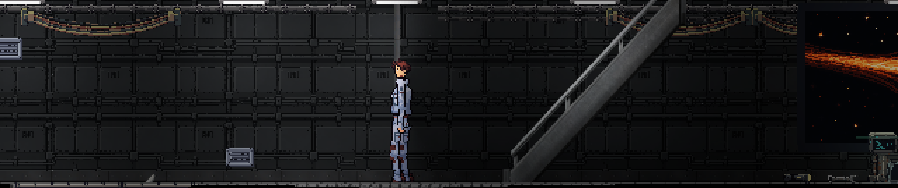

Первый день на станции
Первая глава. Играть прямо в браузере.

Приступить к смене
Пройдите историю с начала или сразу осмотрите станцию.
Загрузка игровых файлов…
На телефоне используйте стрелки и кнопку действия. Для удобства поверните экран горизонтально.
Освойтесь на станции
На компьютере используйте клавиатуру. На телефоне удерживайте стрелки, а для диалогов нажимайте «Далее» и варианты ответа.
- A D
- Движение влево и вправо
- W S
- Подъём и спуск
- Shift
- Бег
- E
- Взаимодействие и диалог
- 1…5 G
- Выбор и бросок предмета
- Esc
- Пауза
Перед запуском
Что входит в демоверсию?
Первая глава: прибытие, знакомство с экипажем, диалоги и задания. После завершения главы демоверсия заканчивается. После завершения главы демоверсия заканчивается. Режим осмотра пропускает вступление и позволяет сразу погулять по станции.
Что нужно для игры?
Современный браузер с WebGL 2. На компьютере доступны клавиатура и мышь, на телефоне появляются экранные кнопки. При первом запуске загружается около 30 МБ.
Сохраняется ли прохождение?
В этой браузерной демоверсии прогресс временный. После обновления или закрытия страницы прохождение придётся начать заново.